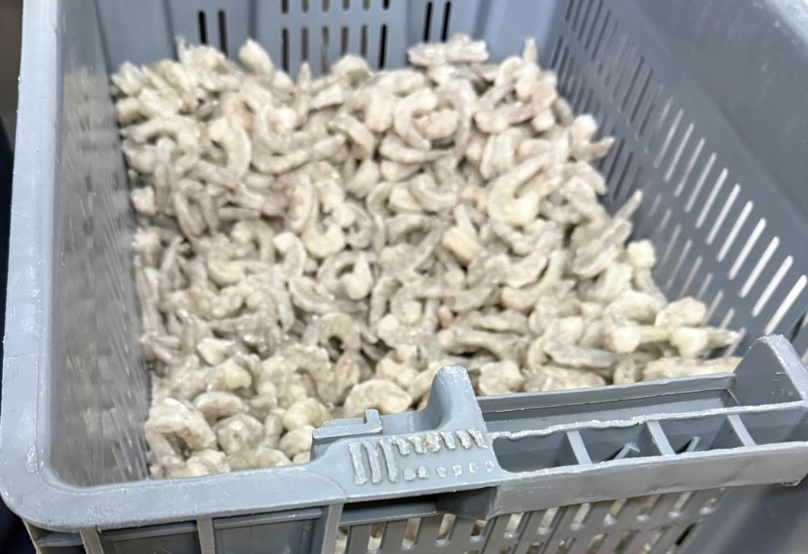

Qué hacemosWhat we do
Comercio mayorista de productos del marWholesale seafood trade


Camarón congeladoFrozen shrimp
Exportamos camarón congelado en volúmenes comerciales.We export frozen shrimp in commercial volumes.
Ventas B2B internacionalesInternational B2B sales
Atendemos a importadores y distribuidores en distintos mercados.We serve importers and distributors across different markets.
Relaciones comerciales establesStable business relationships
Trabajamos en el desarrollo de mercados y en cuentas de largo plazo, con precios y condiciones claras.We work on market development and long-term accounts, with clear pricing and terms.